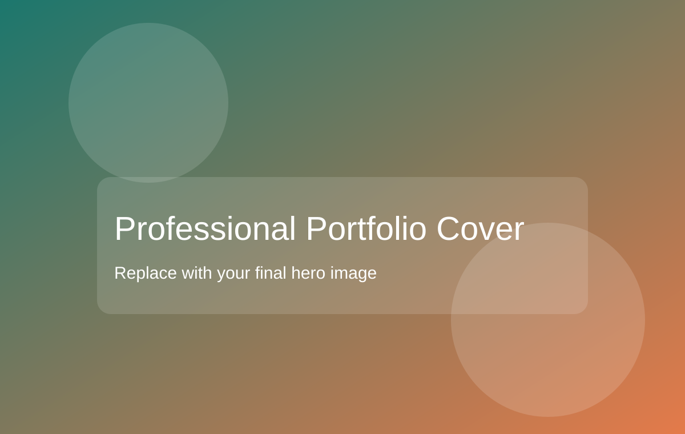

What You Can Find Here
This portfolio presents my background, selected projects, practical skills, and professional growth as a future cloud and cyber security specialist.
Welcome to my portfolio.
I am a student at Thomas More Geel in Applied Computer Science, with a focus on Cloud and Cyber Security.
Discover My Projects
This portfolio presents my background, selected projects, practical skills, and professional growth as a future cloud and cyber security specialist.
I am improving my foundations in secure software development, networking, and cloud infrastructure while building reliable, user-friendly solutions.